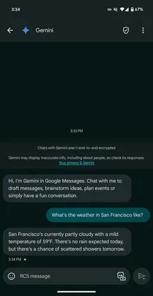

Geçtiğimiz ay Google, Şubat ayının son haftasından itibaren yapay zeka asistanı Gemini'yi Google Mesajlar'ın beta sürümünde sunacağını duyurmuştu. Biraz gecikmeli de olsa Gemini nihayet beta sürümde sunulmaya başlandı.
Gemini'ye erişmek için uygulamada yeni görüşme simgesine tıklamanız gerekiyor. Açılan menüde Gemini simgesine tıklayarak sohbet robotuna erişilebiliyor. Gemini ile mesaj taslağı hazırlayabilir, sorular sorabilir veya etkinlikler planlabilirsiniz.
Ancak Gemini'ye erişmek için beta test kullanıcı olmanız, Google hesabınızın olması, RCS'yi etkinleştirmeniz, dili İngilizce olarak ayarlamanız, Google Pixel Fold, Pixel 6 ve üzeri, Samsung Galaxy S22 ve üzeri, Samsung Galaxy Z Flip veya Z Fold telefonlarından birine sahip olmanız gerekiyor